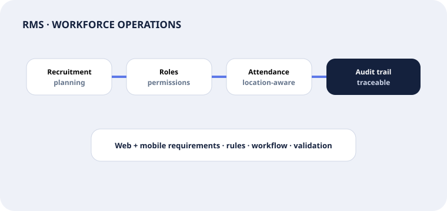

04 · SaaS · Abu Dhabi · Web + mobile
Resource Management System: rules people can operate.
Recruitment planning, role permissions, employee audits and location-aware attendance translated into traceable digital workflows.

Requirements evidence
Complex policy became testable workflow.
Translate annual workforce planning into structured roles, approvals and planning data.
Define actor permissions and the workflow states each role can create, change or approve.
Specify location-aware attendance and time capture behavior for operational traceability.
Create a searchable record of changes and actions for operational and management review.